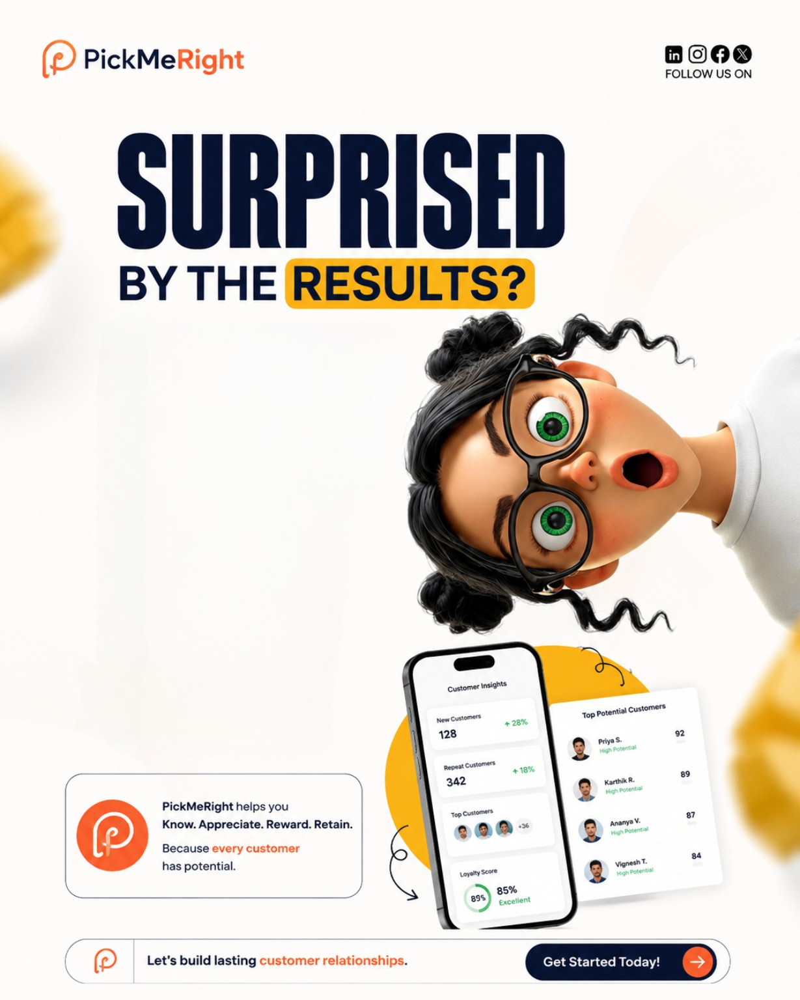
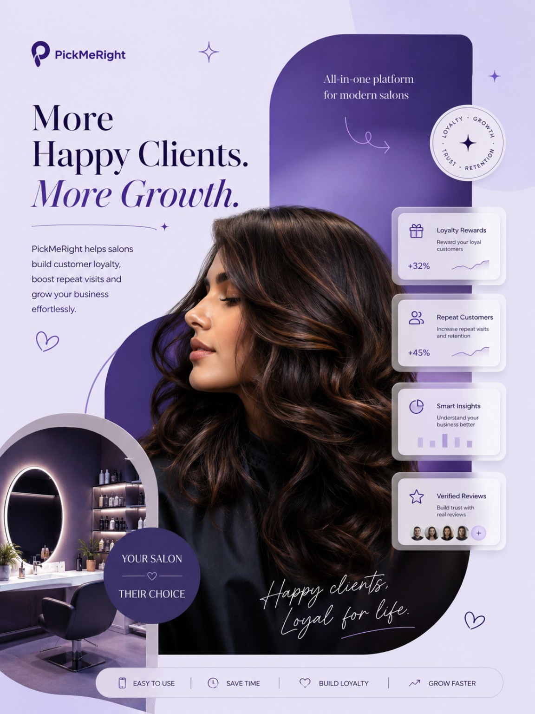
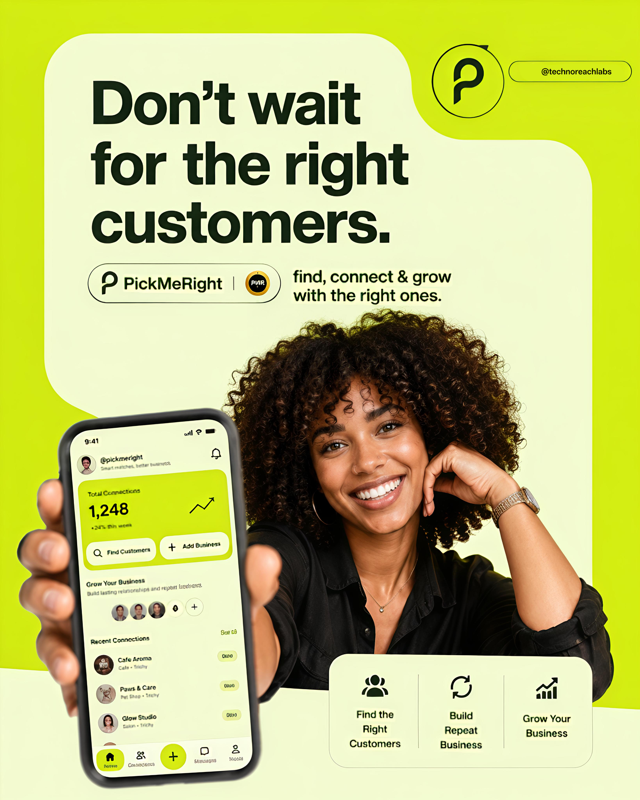
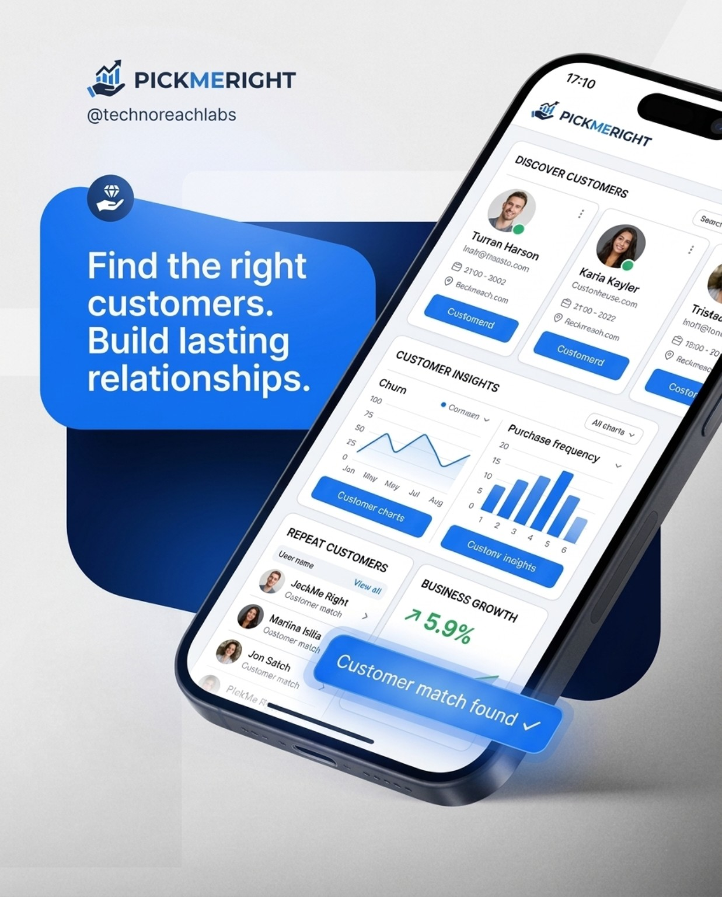
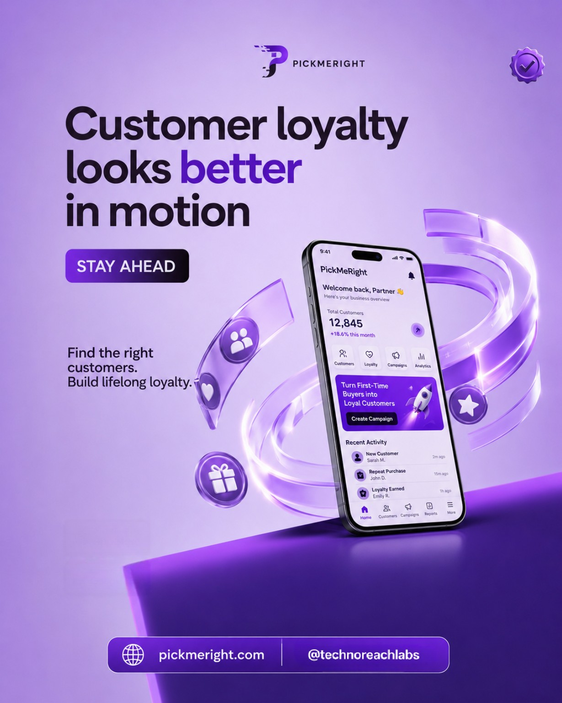
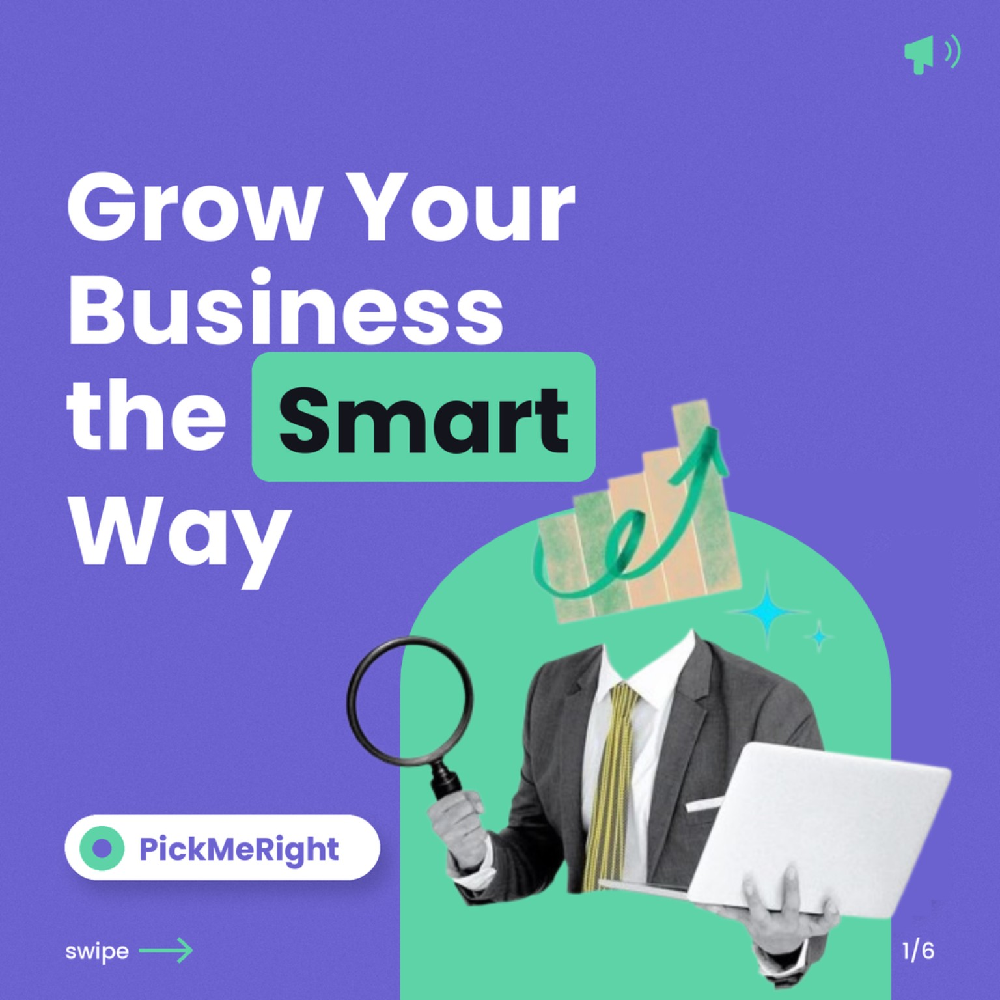

Graphic Design
Visual identities, campaign creatives, posters and social-first designs that make a brand memorable.
VISUALS · BRANDING · CAMPAIGNSDESIGN · DIGITAL · STORYTELLING
I'm Bavana Sri Sivakumar — a multidisciplinary creative working across graphic design, social media, motion and the web.
I bring ideas to life through thoughtful visuals, engaging content and functional digital experiences.
I'm a final-year B.Sc. Computer Science student with around two years of freelance graphic design experience. I've worked on creative projects for brands and businesses, spent time working with a company, and currently balance company work with freelance projects.
I enjoy moving between creative disciplines — from shaping a social media campaign to designing a website and bringing visuals to life with motion.
Combining visual thinking, clear communication and practical digital skills to create work that feels considered and connected.
Visual identities, campaign creatives, posters and social-first designs that make a brand memorable.
VISUALS · BRANDING · CAMPAIGNSContent planning, creative direction and consistent social media communication for businesses.
CONTENT · PLANNING · MANAGEMENTModern, responsive website experiences — from design and build to deployment.
UI · RESPONSIVE WEB · DEPLOYMENTAnimated visuals and promotional motion pieces that bring messages to life.
ANIMATION · PROMO · MOTIONClear, engaging scripts for promotional content, social media and brand storytelling.
IDEAS · STORYTELLING · COPYA selection of social campaigns and creative projects. PickMeRight carousel slides are grouped as one campaign.





A six-part PickMeRight educational carousel explaining customer acquisition, repeat sales and business growth.

Listen first.
Understand the brief, audience and purpose before jumping into visuals.
Think creatively.
Explore ideas and shape a visual direction that fits the message.
Make it work.
Pay attention to details, consistency and the final experience.
For creative projects, collaborations or opportunities, feel free to reach out.